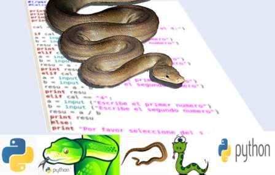
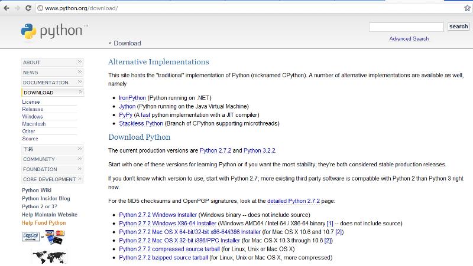
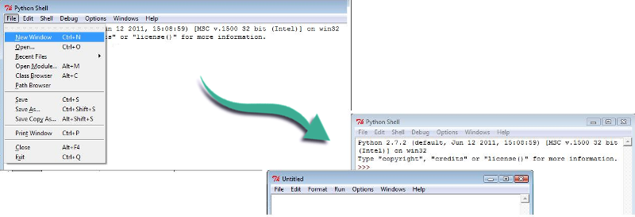
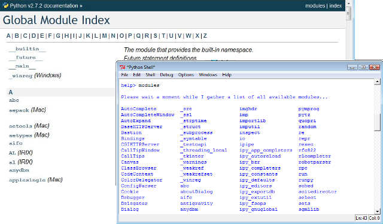

Esta obra esta protegida bajo una licencia de creative commons
Universidad de Antioquia
2010

Todos los lenguajes de programación comparten aspectos generales para escribir las instrucciones necesarias que harán que el computador u ordenador realice una tarea específica, pero a su vez, tienen sus particularidades, tales como sus palabras claves, su sintaxis, su propia historia: su origen y su evolución.
En este capítulo se presenta una breve historia del origen del lenguaje de programación Python y aspectos particulares para iniciarse en el uso del lenguaje para desarrollar programas o aplicaciones.
Se parte de la instalación del programa en el sistema operativo Windows (no se incluye para otros sistemas operativos) y luego como se editan y ejecutan programas en código de Python. Se incluyen referencias de las ayudas para consultar los comandos de Python y sobre los módulos que permitirán extender y personalizar el lenguaje.
(Van Rossum, 2011a; Python, 2011d; Python, 2011a; Van Rossum, 2011b)
El lenguaje de programación Python es de los denominados lenguajes dinámicos tipo guion (en ingles 'script'). Se puede considerar como un lenguaje moderno de alto nivel y que permite trabajar en varios paradigmas de programación. Fue creado a principios de 1990 por Guido van Rossum en Stichting Mathematisch Centrum (Pycon, 2011). Como lo escribe el mismo Guido en (Van Rossum, 2011b), fue Lambert Meertens quien le ofreció el trabajo en su equipo de programadores del centro de investigación y quien estaba diseñando un lenguaje de programación que luego se denominó ABC y del que se creó luego Python. El grupo de programadores estaba trabajando en ese momento en un intérprete de lenguaje que derivó en el concepto de máquina virtual.
Escribir sobre la historia de Python es escribir sobre la vida Guido (Van Rossum, 2011a; Python, 2011d; Python, 2011a; Van Rossum, 2011b) quien nació en Holanda en 1956 y a quien se consideró como un filántropo y filósofo del “open source”, ya que desde sus inicios compartió sus códigos y trabajos realizados en el centro y posteriormente el lenguaje Python, creando Python Software Foundation (Python, 2011a).
La primera versión de Python 0.9.0 fue liberada en 1991 y en el 2010 se liberó la primera versión Python 2.7. En este curso he trabajado con la versión Python 2.7.2 liberada en julio 3 del 2010 y ya se tienen las versiones de Python 3.2.2 para diferentes sistemas operativos.
Las referencias (Van Rossum, 2011a; Van Rossum, 2011b) describen detalles muy interesantes de la historia del Python contadas por su propio autor.
Existen comunidades y conferencias (Tiobe, 2011) en todo el mundo que utilizan el Python como lenguaje de programación principal y referencias de ser un gran incremento de su uso en los años 2007 y 2010 (CWI, 2011; Blogger, 2011).
El archivo de instalación del lenguaje Python se obtiene en su página principal (Python, 2011a), entrando a su menú izquierdo en la pestaña de DOWNLOAD como se muestra en la siguiente imagen:

La nueva carpeta creada será designada C:\Python27 y se creará en el menú de programas una nueva pestaña como lo muestra la siguiente imagen:
Para mi caso particular, al estar trabajando en un portátil con sistema operativo Windows Vista, selecciono la opción Python 2.7.2 Windows installer, lo cual hace que se descargue el archivo Python 2.7.2.msi de un tamaño de 15.596 kB.
Al ejecutar el archivo desde el Windows, se inicia el programa de instalación creando una nueva carpeta en el disco principal si no se especifica nada diferente. La siguiente imagen ilustra la primera ventana de dialogo para iniciar la instalación.
El lenguaje de programación Python cuenta con una buena cantidad de tipos de variables ('type'), funciones propias ('Built-in function'), comandos ('statement') y formas de fraccionar y ampliar esto creando nuevas funciones, objetos y módulos. Todo esto permite que se tengan incontables combinaciones para realizar códigos de programas.
En esta sección haremos un breve resumen de los elementos básicos del lenguaje que se han discutido en los capítulos precedentes de este documento.
Para el manejo de datos o información, el lenguaje Python cuenta con diferentes tipos de variables, de los cuales se presentaron en el capítulo 3 los siguientes:
>>>s = 'aqui'
>>>type(s)
<type 'str'>
>>>
>>>n = 10
>>>type(n)
<type 'int'>
>>>
>>>r = 3.2334
>>>type(r)
<type 'float'>
>>>Para editar un archivo en código de lenguaje Python es posible utilizar cualquier editor de textos, pero el interface de Python dispone de un editor que facilita su escritura y lectura mostrando en colores diferentes las palabras claves.

Para iniciar un nuevo archivo en el editor desde el interface de Python, se selecciona la opción mostrada en la imagen anterior. Esto abre una nueva ventana identificada en la parte superior como Untitled debido a que aún no se ha dado ningún nombre al nuevo archivo. A partir de este momento se puede escribir líneas de código en Python y usar la opción Run del menú para ejecutar el programa escrito. El editor está inicialmente configurado para guardar el nuevo archivo o sus cambios antes de realizar la ejecución del programa.
Los módulos permiten ampliar y personalizar las funciones y los objetos que estarán disponibles en el ambiente de programación para facilitar la escritura de códigos.
Al instalar el Python se tienen disponible ya un gran número de los cuales se pueden consultar usando help o en la documentación oficial en la sección de global module index. La siguiente imagen muestra el índice general de la documentación y cómo al usar la palabra modules en la ayuda del interfaces de Python, se puede obtener un listado de todos los módulos que se pueden invocar con el comando import.

También se puede obtener una gran cantidad de sitios en Internet con listados y enlaces de módulos y paquetes en Python. La referencia (Python, 2011f) es un índice de la página oficial de Python en orden alfabético del nombre del módulo.
La referencia (Jung, 2008) presenta una lista de 50 módulos y los enlaces discriminados según su aplicación, por ejemplo, en el tema de ciencias y matemáticas figuran los módulos scipy, Numpy, numarray, matplotlib los cuales disponen de un buen conjunto de funciones y objetos en Python que aproximan su ambiente al del programa Matlab en cuanto a manejo gráfico y computación numérica. En aplicaciones de gráficos tridimensionales figura el módulo Vpython que dispone de una colección de objetos y funciones para desarrollar ventanas gráficas de tres dimensiones y su interacción con el usuario.
La referencia (SourceForge, 2011) presenta una colección de 660 módulos ordenados según el número de solicitudes de descarga en la semana y dispone de su enlace para descargar el módulo de interés. Esta es una página importante de hospedaje de programas de libre licencia.
En la referencia (Hellmann, 2011) de la página de Doug Hellmann denominada el módulo Python de la semana (en inglés Python Module of the Week) se pone a disposición un libro en pdf con una buena colección de módulos ordenados según su función principal y dispone de ejemplos de uso de cada uno de los módulos. Su versión 1.132 es del 8 de julio del 2011.
Así como los módulos en Python tienen sus ventajas, también tienen sus desventajas, en el Blog de Allen (Allen, 2011) se argumenta sobre las ventajas y desventajas, y se proponen soluciones a algunas de las inquietudes planteadas, tales como la acción de recargar los módulos al estar trabajando en el ambiente de programación. Se incluyen adicionalmente enlaces a otros tópicos de Python.
Cada módulo en Python requiere de un estudio aparte y el módulo requerido depende de los intereses particulares al estar frente a un desarrollo de una aplicación específica. Aquí tan sólo se hizo una mínima selección de sitios con módulos de interés, ya que en Internet al buscar en Google con las palabras “module python index”, se obtienen más de 71 millones de sitios, esto da una idea de la gran cantidad de información relacionada con módulos de Python.
Esta obra esta protegida bajo una licencia de creative commons
Universidad de Antioquia
2010